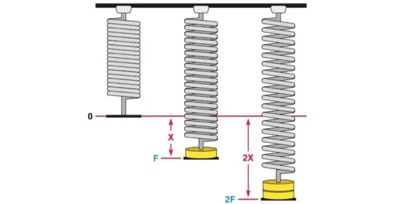

La Ley de Hooke es un principio fundamental de la física y la ingeniería que describe el comportamiento elástico de los materiales cuando se someten a fuerzas. En términos simples, establece que la deformación de un cuerpo es directamente proporcional a la fuerza aplicada, siempre que no se exceda el límite elástico del material. Matemáticamente, se expresa como:
F = k ⋅ x
donde F es la fuerza aplicada, k la constante elástica o de rigidez del material, y x la deformación o cambio de longitud.
Esta ley es esencial para comprender cómo funcionan resortes, estructuras, puentes, amortiguadores y muchos otros sistemas mecánicos. Además, sirve como base para el estudio de la elasticidad, el diseño de materiales y la ingeniería estructural, ayudando a predecir cómo reaccionarán los objetos ante diferentes cargas.

Antecedentes hitoricos
La Ley de Hooke fue enunciada por el físico y arquitecto inglés Robert Hooke en el año 1660, aunque fue publicada formalmente en 1678 en su obra Lectures de Potentia Restitutiva. Hooke descubrió que, al estirar o comprimir un resorte dentro de ciertos límites, la fuerza necesaria para hacerlo era proporcional al cambio en su longitud.
Robert Hooke (1635–1703) fue una de las mentes más brillantes de su época, contemporáneo de Isaac Newton y miembro de la Royal Society de Londres. Además de su famosa ley de elasticidad, realizó importantes contribuciones en campos como la microscopía, la astronomía, la arquitectura y la mecánica.
El descubrimiento de la Ley de Hooke marcó un hito en la historia de la física, ya que permitió establecer una relación cuantitativa entre fuerza y deformación, sentando las bases para la comprensión moderna del comportamiento elástico de los materiales y del desarrollo posterior de la mecánica de sólidos.
Algunos ejemplos cotidianos de la ley de Hooke:
Los ganchos que usamos para tender la ropa a secar, pues el resorte interno se comprime o estira al abrirse o cerrarse:
Un amortiguador como el de tu auto usa un resorte que se comprime al absorber impactos:
Un colchón, pues sus resortes internos se comprimen con el peso del cuerpo y recuerdan siempre su forma:
Un trampolín, los resortes del borde y el elástico del centro se deforman según la fuerza del salto:
Una báscula de resorte con masa colgante, es el ejemplo más clásico de la ley de Hooke:
Juguetes de cuerda, estos cuentan con un resorte interno que se deforma al estirar la cuerda y vuelve bruscamente a su posición al soltar:
Las bandas elásticas de resistencia, se deforman y estiran según la fuerza aplicada produciendo una resistencia proporcional a la misma:
Reflección
La Ley de Hooke es una regla de la ciencia que nos explica cómo algunos objetos se pueden estirar o comprimir, y luego volver a su forma original, como si tuvieran memoria. Por ejemplo, cuando jalas una liga o saltas en un trampolín, estás viendo la Ley de Hooke en acción. Esta ley dice que mientras más fuerza le hagas a un objeto elástico, más se estirará, pero si no lo fuerzas demasiado, volverá a ser igual que antes.
Gracias a esta ley, los científicos y los ingenieros pueden diseñar muchas cosas que usamos todos los días. Los resortes en los juguetes, los amortiguadores de los autos, las camas elásticas, las básculas y hasta los relojes funcionan gracias a lo que nos enseña la Ley de Hooke. Incluso los edificios y los puentes se construyen tomando en cuenta esta ley, para que no se rompan fácilmente cuando sopla el viento o hay un temblor.
En pocas palabras, la Ley de Hooke nos ayuda a entender cómo se comportan los materiales cuando les aplicamos fuerza. Aunque no la veamos, está presente en muchos inventos y objetos que nos hacen la vida más cómoda, segura y divertida. ¡Es un ejemplo increíble de cómo la ciencia está en todo lo que nos rodea y hace que nuestro mundo funcione mejor!